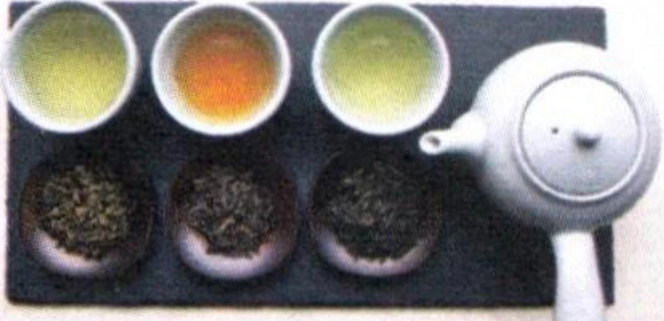
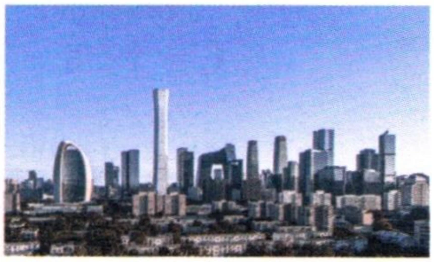
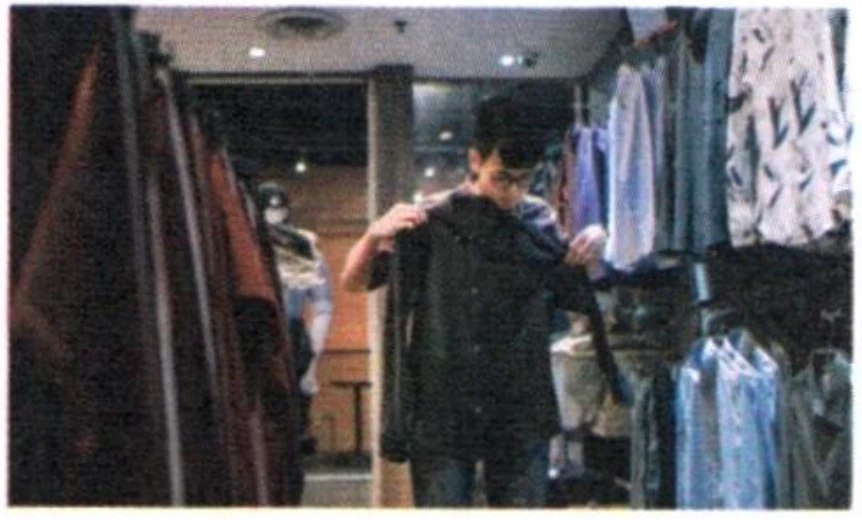

LessonУрок
第二部分Part IIЧасть II
第4—5题： 听问题， 选择正确回答。每题听两次。Questions 4-5: Listen to each question and choose the correct answer. Each question will be played twice.Вопросы 4-5: Прослушайте каждый вопрос и выберите правильный ответ. Каждый вопрос прозвучит дважды.
Jīntiān tiānqì zěnmeyàng?例如： 今天 天气 怎么样？
How is the weather today?Какая сегодня погода?fēicháng rèA 非常 热
very hotочень жаркоhěn hǎotīngB 很 好听
sounds beautifulкрасиво звучитzài hē shuǐC 在 喝 水
drinking waterпьёт водуtài zǎo leA 太早了
méi shuìjiàoB 没 睡觉
bù xiǎng qùC 不 想 去
hěn duōA 很多
yě bú guìB 也不贵
yě hěn hǎokànC 也 很好看
第三部分Part IIIЧасть III
第6—8题： 听对话， 选择最匹配的图片。每题听两次。Questions 6-8: Listen to each dialogue and choose the correct picture. Each dialogue will be played twice.Вопросы 6-8: Прослушайте каждый диалог и выберите подходящую картинку. Каждый диалог прозвучит дважды.
A
B

C

D
